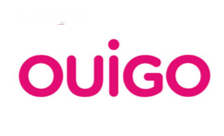

Histórico Circulaciones AV Tramo: Albacete-Alicante
Visualización interactiva diaria del número de circulaciones AV entre Albacete y Alicante
Análisis Gráfico de Circulaciones
Filtros Rápidos
Eje Cronológico de la Alta Velocidad Ferroviaria
Albacete - Alicante y Conexiones Clave
Este eje cronológico presenta los hitos principales en la puesta en servicio de la infraestructura y los operadores de alta velocidad que conectan Albacete y Alicante, incluyendo el servicio Avant con Murcia y la futura conexión con Xátiva.
⚪
17 de junio de 2013
Inauguración y Renfe AVE
Se inaugura el tramo Albacete-Alicante de la Línea de Alta Velocidad Madrid-Levante. Renfe (AVE) comienza a operar, siendo el primer operador en este trayecto.
🟠
20 de diciembre de 2022
Renfe Avant Murcia-Alicante
Inicio del servicio de trenes Avant de Renfe entre Murcia y Alicante, utilizando la infraestructura de alta velocidad.
🟢
27 de marzo de 2023
Renfe Avlo
Comienzo de las operaciones de Renfe (Avlo), el servicio de alta velocidad de bajo coste, en la ruta Madrid-Alicante con paradas en Albacete.
🟣
27 de abril de 2023
Ouigo
Ouigo inicia sus operaciones de alta velocidad de bajo coste en la ruta Madrid-Albacete-Alicante.

🔴
2 de junio de 2023
Iryo
Iryo comienza a operar servicios de alta velocidad en el corredor que conecta Madrid, Albacete y Alicante.
🔵
En Servicio
12 de mayo de 2025
⚫
2026
Apertura de la Línea AV La Encina-Bif. Xátiva
Fecha prevista para la puesta en servicio de la conexión de alta velocidad entre La Encina y la Bifurcación Xátiva, completando un tramo clave del Corredor Mediterráneo.